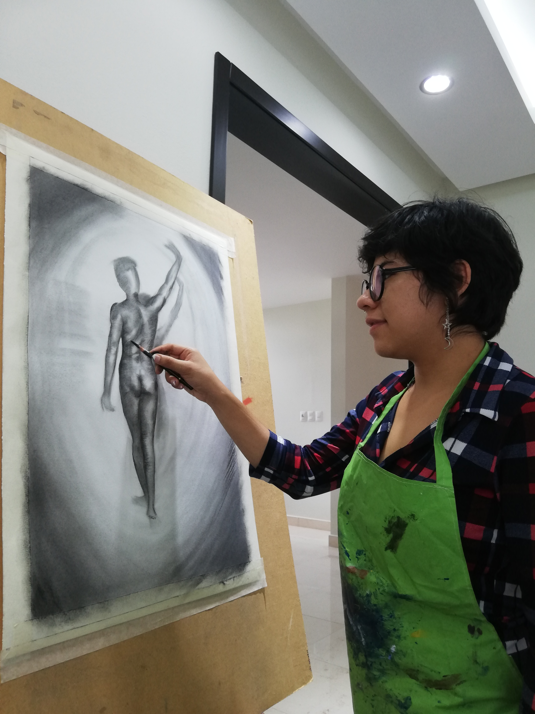
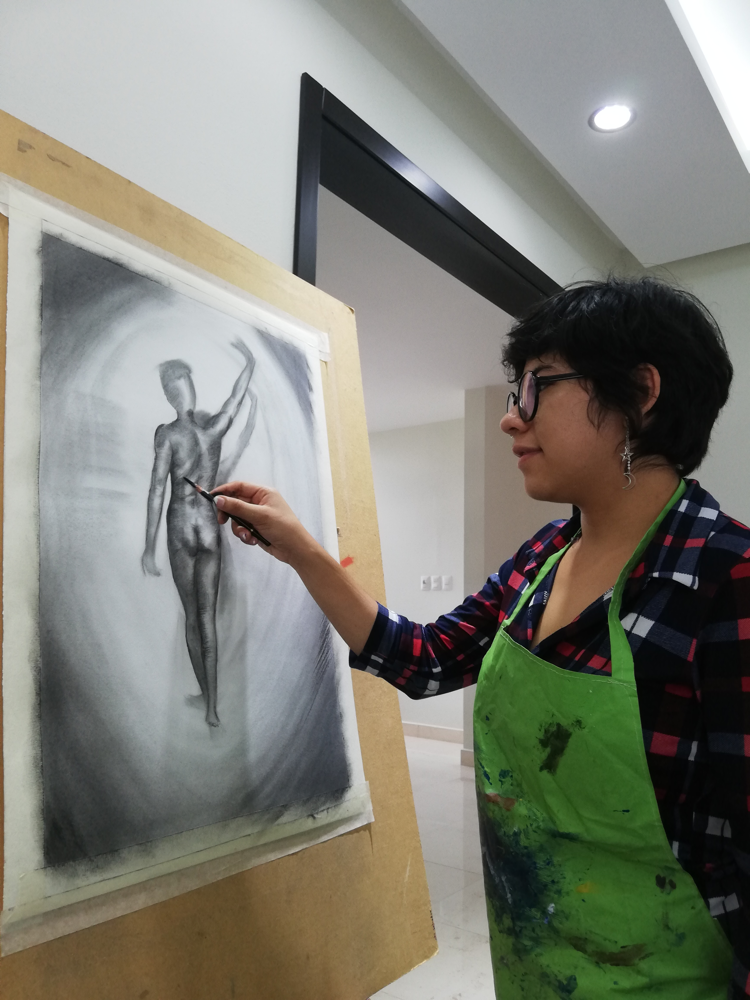

-
DESARROLLO DE UNA IDENTIDAD VISUAL ORIZABEÑA EN LA PRODUCCIÓN ARTÍSTICA
El propósito de esta página es dar a conocer mi desarrollo creativo en un portafolio profesional en marco de las actividades realizadas en el Centro Cultural y Estudios Escénicos de Orizaba (CCEEO). Las actividades fueron la docencia y fundación del taller de artes plásticas con las técnicas que abarcaron el dibujo y la pintura artística, colaboración en el Tercer Festival Internacional de Teatro Citlatépetl y después formar parte del comité organizador de la cuarta edición del Festival Internacional de Teatro Citlaltépetl el cual actualmente se denomina el “Encuentro Internacional de Identidad y Arte (EIIA)”. Asimismo, ccomparto a manera profesional el desarrollo del proceso creativo de la pieza artística denominada: “Mahtlaktli Ehekatl” como producto principal de la investigación, la experiencia y la motivación de crear piezas sobre la identidad orizabeña.
Egresada de la Facultad de Artes Plásticas y Audiovisuales de la Benemérita Universidad Autónoma de Puebla con el propósito de mover el arte al público. ¡Contáctame para mayor información!
 

-
 View more
View moreLogotipo final del 3er Festival Internacional de Teatro Citlaltépetl
 View more
View moreIdentidad visual del 3er FITC 2021
 View more
View moreBoceto preliminar para la 4ta edición de FITC 2022
 View more
View moreLogotipo final para la identidad visual del 4to Festival Internacional de Teatro Citlaltépetl 2022
 View more
View moreObra basada en un personaje importante de la cultura mexicana nacida en Orizaba: "La abuelita de todo México"
 View more
View moreEntrega de Reconocimientos en el CCEEO.
 View more
View morePrimera Exposición del Área de Artes Plásticas en el Centro Cultural y Estudios Escénicos de Orizaba (CCEEO)
 View more
View moreObra que formó parte de la exposición: "Oscuridades Recurrentes" y producto de la investigación del desarrollo de una identidad orizabeña.
 View more
View moreLogotipo de la marca orizabeña: "Xolo, El Escuincle"
-
Acerca de mí
Egresada en la Licenciatura en Artes Plásticas de la Benemérita Universidad Autónoma de Puebla. Se dedicó a la gestión, administración de redes y organización del Colectivo Itacate (Puebla). Se dedica a la producción de obra pictórica de autoría, producción de encargos de obra plástica y visual. Creadora de la marca mexicana “Xolo, el escuincle”, la cual tiene el objetivo de promover la gastronomía, costumbres y tradiciones de la región de las Altas Montañas enfocado principalmente a la ciudad de Orizaba.
Su producción sigue una línea de realismo a través de la reflexión de problemáticas sociales y culturales, asi como lo caricaturezco usando como medio la ilustración para promover la cultura mexicana a través de la expresión visual de la calcomanía (sticker) y la técnica de acuarela.
-
Contáctame
Para cualquier colaboración, duda o pregunta acerca de mi trabajo artístico, por favor contactarme en:
Email: avsd.art@gmail.comTel: 2721053792